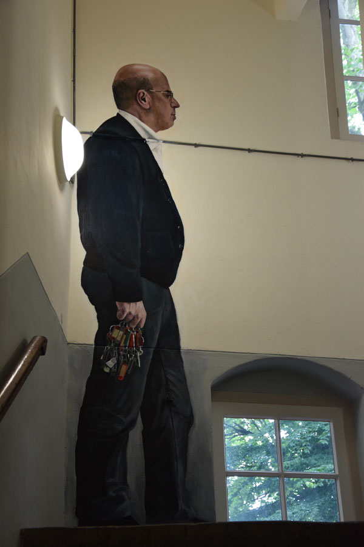
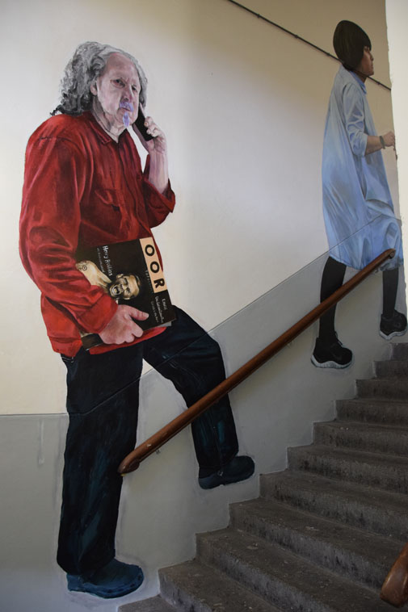

TRAPLOPEN IN DE TIJD
Een schildering in acrylverf van zes meer dan levensgrote mensen (350cm hoog) van de begane grond tot de eerste verdieping op de muren van het trappenhuis van-en in opdracht van- de Willem2Fabriek in ‘s-Hertogenbosch met bijbehorende interviews.
Jaar van onstaan: 2016
HET IDEE
Klik op onderstaande namen om het bijbehorende interview (geluidsopname) te horen en om de muurschilderingen te zien.
PAUL GOULMY
MIKE VAN LIESHOUT
PETER KOENE
PAUL SMITS
JACQUELINE KOSTERMANS
SARA MOAZZAMI
Meer foto's en achtergronden te zien in het blog.
Het idee
Van curator Ivonne van der Velden kregen Jan de Bie, Dennis Admatdjais en ik de opdracht om een muurschildering te maken in het trappenhuis van kunstencluster Willem2Fabriek in 's-Hertogenbosch. We mochten ons laten inspireren door het gebouw en de geschiedenis, de gebruikers in het verleden en heden.
De afgesleten traptredes spreken tot de verbeelding; wie hebben hier allemaal gelopen, waar gingen ze heen, wat gingen ze doen, wie waren zij?
Mijn eerste associaties gingen richting het schilderij van Duchamp ‘Nu descendant un escalier n° 2’ uit 1912. Het ging Duchamp om een statische representatie van beweging te schilderen en daarbij was hij geïnspireerd door Muybridge.
Eadweard Muybridge was de eerste die foto’s maakte waarbij de belichtingstijd maar een fractie van een seconde duurde, waardoor hij bewegingen kon vastleggen d.m.v. fotografie.
Miro zag het schilderij van Duchamp en maakte in 1937 (tijdens de Spaanse Burgeroorlog) zijn eigen
variant op het schilderij met een andere meer symbolische dramatische lading. (Ze gaat de trap op i.p.v. af)
Gerhard Richter reageerde op dit thema met twee schilderijen van een naakte en een geklede vrouw uit 1965, gebaseerd op foto’s, waarin door de vaagheid van de figuur beweging gesuggereerd wordt.
Als kunstenaar verhoud ik me tot mijn voorgangers; het is niet voor niets dat ik aan deze werken moest denken als basis waarop ik mijn gedachten rondom de ideeontwikkeling van de schets kon laten groeien.
Beweging, ruimte, tijd; begrippen die verbonden lijken aan de locatie die me was toegewezen in de Willem2Fabriek.
De trap verbindt beneden met boven (en andersom), suggereert beweging, of roept deze op, en kan een symbolische lading in zich dragen. Zo las ik op internet dat een trap het algemene symbool is van het opklimmen naar een hoger (geestelijk) niveau. En dan zijn er weer van allerlei verschillende soorten trappen; als je over deze droomt hebben ze ieder weer andere (zelfs ook seksuele) betekenissen.
In mijn ideevorming voor de muurschildering zag en zie ik de trap als een verbinding tussen verleden met heden en de toekomst.
De afgesleten treden herinneren voelbaar aan al diegenen die er gelopen hebben; wie waren dat, wat gingen ze doen, waar gingen ze heen? Zij waren onderweg naar werk of naar huis, in beweging, in de verbindende tussenruimte van het trappenhuis. Wie lopen er nu, en wie in de toekomst?
Ik heb 6 mensen geinterviewd( waarvan de geluidsopnames op deze site te horen zijn) en meer dan levensgoot (350cm hoog)geschilderd terwijl zij de trap op lopen. Zij dragen een symbool bij zich dat iets vertelt over de geschiedenis, heden of misschien ook de toekomst van de Willem2Fabriek.
Deze modellen zijn mensen die in het verleden in de Willem2Fabriek hebben gewerkt, er nu werken of er op een andere manier een sterke en belangrijke band met de plek hebben.
Zij zijn gestold in hun beweging, dragers van symbolen, stilgezet in deze tussenruimte, om bekeken te worden door de traplopers van de toekomst. Tegelijk nemen ze de bezoeker mee verder de trap op naar de andere muurschilderingen van Dennis Amatdjais en Jan de Bie. Ik heb ze geschilderd in volgorde van de tijd waaraan zij verbonden zijn; ik ben begonnen met degene die het verst terug gaat in de geschiedenis, naarmate je verder de trap op loopt zijn geportretteerden te zien die meer verbonden zijn met het heden.
Paul Goulmy, achterkleinzoon van één van de oprichters van de sigarenfabriek Goulmy en Baar. Luister hieronder naar het verhaal van Paul waar Frans van Gaal, aanwezig bij het gesprek en onderzoek heeft gedaan naar de opkomst van het socialisme in Den Bosch, nog enige feiten toevoegt.

Mike van Lieshout, tubaspeler bij de koninklijke harmonie die gevestigd is in de W2Fabriek en er zijn oorsprong vindt. Luister hieronder naar het geluid van zijn tuba en daaronder zijn verhaal.


Peter Koene, oud beheerder vanaf 1985 t/m 2013/4, kunstenaar, en heden actief bij het Grafisch atelier dat gevestigd is in de W2Fabriek.
 
Paul Smits, oprichter W2 popodium dat gevestigd is in de fabriek. Luister hieronder naar zijn verhaal.


Jacqueline Kostermans, 18 jaar werkzaam als tentoonstellingsmaker bij kunstcollectief Artis dat gevestigd was in de fabriek. Luister hieronder naar de geluidsopname waarin zij vertelt over de opkomst en het verdwijnen van Artis.
Sara Moazzami, grafisch vormgeefster met Iraans/Duitse roots, met een passie voor typografie, werkzaam in de W2Fabriek. Luister hieronder naar haar verhaal.
Aan de linkerkant werk van Jan de Bie.